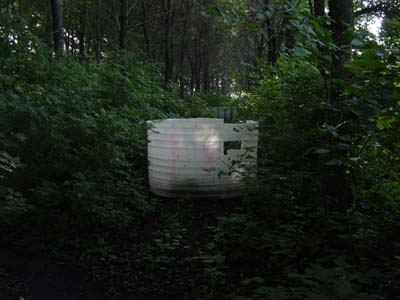

True to its name, this bunker was created from a leaky water tank. We used a sawzall to cut off the top and to cut out a door and two windows. When it was put in the grove in the summer of 2003, it was on the far west end - an area that received little play. So in the fall it was moved toward the middle.
